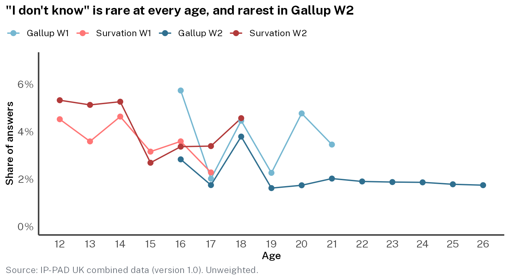

![Diverging bar chart of agreement with 14 statements, grouped into economy, morality, climate and immigration, with all four surveys pooled. About two thirds agree that the government should reduce income differences, ensure health care, that one parent can raise a child as well as two, and that terminally ill people should have a right to assisted dying. Agreement and disagreement are closer for welfare benefits making people lazy and for the three immigration statements on the economy and the UK as a place to live. Between 2 and 5 percent answer that they do not know.](index_files/figure-html/plot-overview-1.png)
Views on the economy, morality, climate and immigration
Issues
Age
Gender
How young people in the UK answer fourteen statements on four political issues, and how their answers differ by gender and age.
Left and right are broad labels, and young people who share one can still disagree on concrete questions. All four surveys therefore asked how far respondents agree with fourteen statements on the economy, moral questions, climate change and immigration, with the option to say that they did not know. Some statements are worded so that agreeing expresses a left-leaning or progressive view, and others so that it expresses a right-leaning or conservative one. This mix helps to tell genuine views apart from a general tendency to agree.
Broad agreement, with more division on welfare and immigration
Each bar shows the answers to one statement, with disagreement to the left and agreement to the right of the centre line. Neutral answers are split evenly across it, and the narrow column gives the share who did not know. All four surveys are pooled.
On moral questions and climate change, clear majorities take the progressive side. About two thirds agree that one parent can raise a child as well as two (67%) and that terminally ill people should have a right to assisted dying (69%), while the opposite statements on discrimination against women and on climate change find more disagreement than agreement. On the economy, however, the answers fit less neatly into one position. Most agree that the government should reduce income differences (68%), yet 51% also accept large income differences as a reward for talent and effort, and slightly more agree than disagree that welfare benefits make people lazy. These patterns hold within each survey.
Immigration divides young people most, and it is also the issue on which the surveys differ most. In Survation W2, 47% agree that immigration makes the UK a worse place to live, compared with 34% in Survation W1 about a year earlier, although both surveys cover the same ages. This could reflect a change over time, but it could equally reflect differences in who took part or in question order, as Survation W2 asked these statements after an experiment on ideology.
Gender gaps are largest on questions about gender and family
Each row compares the share of young women and young men who agree with a statement in one survey. A longer line means a larger gap.
![Dumbbell chart of the share agreeing with four statements, for young women and young men in each of the four surveys. Young women agree more often that one parent can raise a child as well as two and that transgender people should be free to live as they wish, and less often that discrimination against women is no longer a problem. The gaps are larger in the two Gallup surveys. On whether the impact of climate change is exaggerated, young men agree more in Gallup but there is no consistent gap in Survation.](index_files/figure-html/plot-gender-1.png)
Young women and young men differ most on statements about gender and the family. Young women more often agree that one parent can raise a child as well as two, with gaps of between 6 and 16 percentage points, and less often that discrimination against women is no longer a problem. These gaps are larger among the Gallup respondents than among the 12 to 17 year olds in Survation, whose gender was reported by a parent. On climate change, a gap appears in Gallup only, where young men more often see its impact as exaggerated.
Older respondents agree more, on both sides
Each panel shows one statement in Gallup W2, with the share who agree in each age group and a line for the 95% confidence interval. The lower row holds the counterparts of the statements in the upper row.

Since each survey covers different ages, we look at age within Gallup W2, the only survey that spans ages 16 to 26. Interestingly, older respondents there agree more often with statements on both sides of the same issue. Agreement that the government should reduce income differences rises from 62% among 16 and 17 year olds to 71% among 22 to 26 year olds, but agreement that large income differences are acceptable rises as well, from 37% to 54%. This suggests that older respondents are, if anything, more willing to agree in general rather than more left or more right. Differences in who took part at each age could also play a role, and only 121 respondents are aged 16 or 17.
Few answer “I don’t know”
Each dot is the share of “I don’t know” answers across all fourteen statements, at one year of age in one survey. Ages with fewer than 20 respondents are left out.

Only 3% of all answers are “I don’t know”. In the two Survation surveys, 12 to 14 year olds choose it somewhat more often (5% of their answers) than 15 to 17 year olds (3%), most of all for the statement on assisted dying. Gallup W2 has the fewest such answers at every age, so the differences between surveys are as large as those between ages.
About these data
The overview pools all interviews, so Gallup W2, which is twice as large as the other surveys, counts twice as much. The surveys are unweighted and differ in age range, recruitment and timing (see The data), which is why we compare age and gender within surveys. Gallup W1 also shows signs of weaker response quality. The statements that immigration enriches cultural life and that it makes the UK a worse place should go together negatively, as they do in the other surveys with correlations between −0.37 and −0.33. In Gallup W1, however, the correlation is only −0.03. Leaving Gallup W1 out changes no pooled share of agreement by more than 2 percentage points.